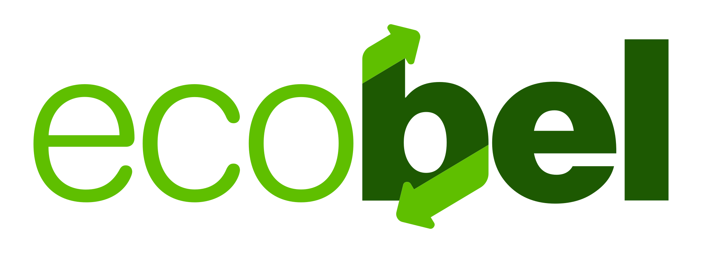
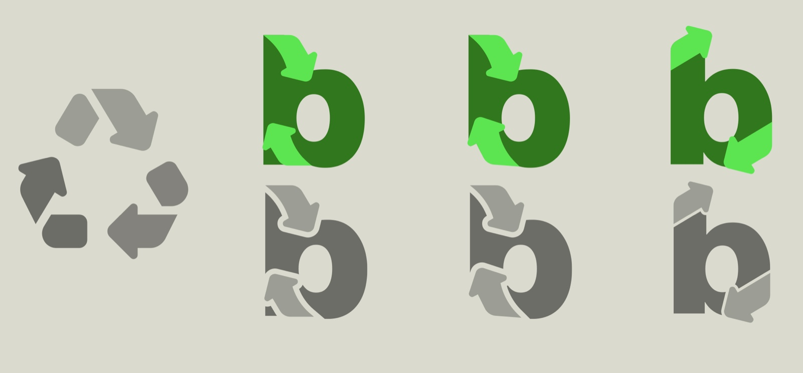
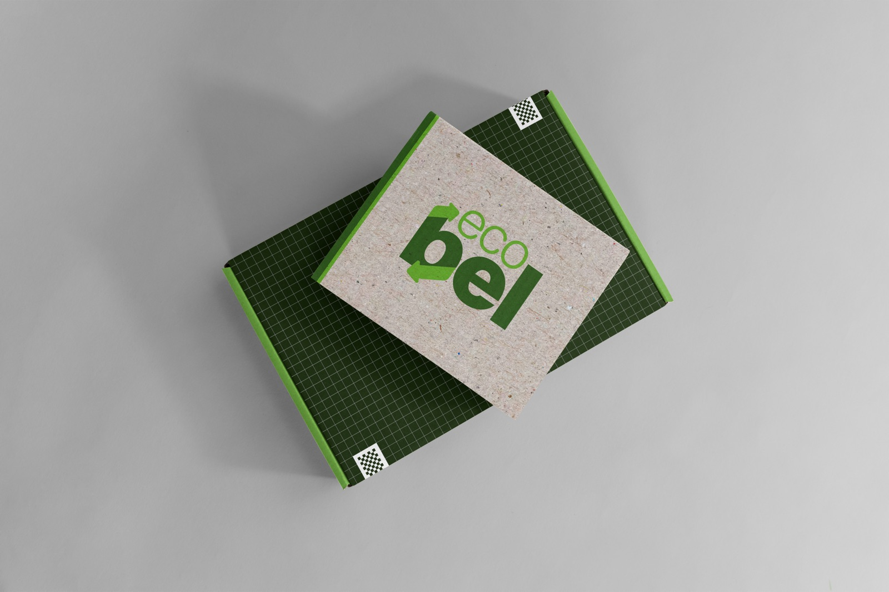
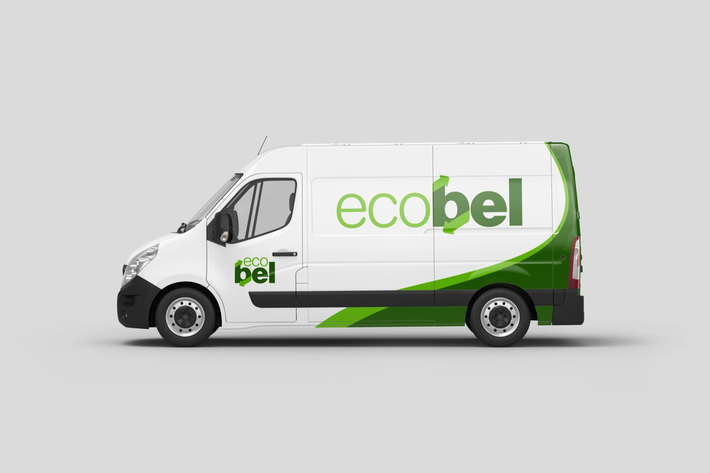
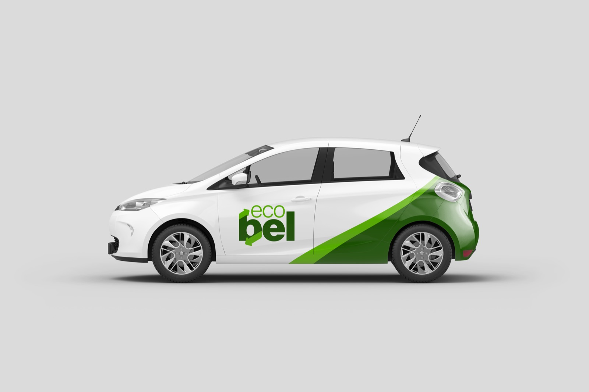
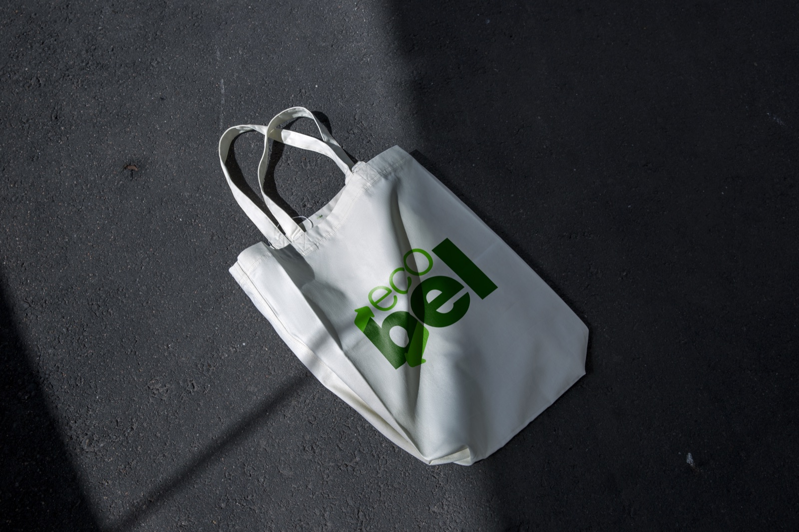
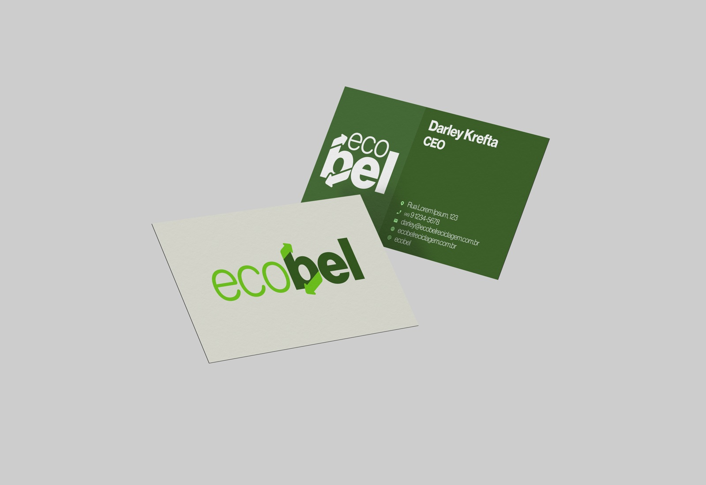
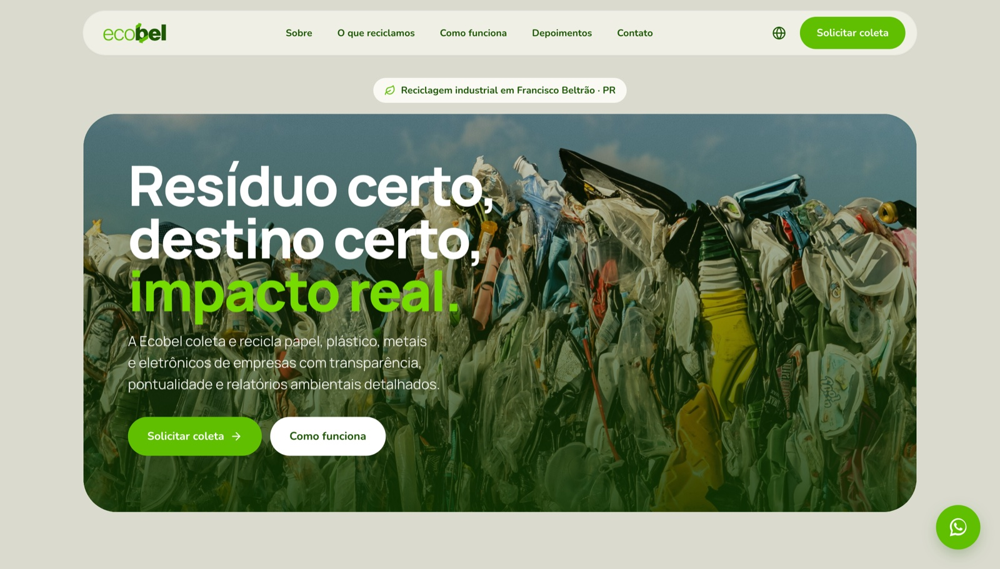

Product Design · B2B Web · Brand System Product Design · Web B2B · Sistema de Marca
Ecobel is a Brazilian recycling company that sells to other businesses, not consumers. I rebranded it and designed + coded its website end-to-end: a responsive B2B product whose job is to build trust and turn visitors into "request a collection" leads. The new visual identity is the foundation that product stands on. A Ecobel é uma empresa brasileira de reciclagem que vende para outras empresas, não para o consumidor. Eu refiz a marca e projetei + codifiquei o site de ponta a ponta: um produto B2B responsivo cuja função é gerar confiança e transformar visitantes em leads de "solicitar coleta". A nova identidade visual é a base sobre a qual esse produto se apoia.


The Challenge O Desafio
Ecobel runs a B2B model: its customers are other companies that need a serious, compliant partner to take their waste. Growth depended on two things working together: a credible public face, and a website built to generate leads, not to sit pretty in a portfolio.
A Ecobel opera num modelo B2B: seus clientes são outras empresas que precisam de um parceiro sério e em conformidade para destinar seus resíduos. O crescimento dependia de duas coisas funcionando juntas: uma cara pública confiável e um site feito para gerar leads, não para ficar bonito em portfólio.
The catch: the starting point was a brand with real equity that couldn't just be thrown away. So the brief had two layers: revitalize the brand without losing its essence, then turn it into a product that sells. The old mark leaned on the obvious recycling cliché: the symbol dropped into the letter "O".
O detalhe: o ponto de partida era uma marca com valor real que não podia simplesmente ser descartada. Então o briefing tinha duas camadas: revitalizar a marca sem perder sua essência e, então, transformá-la num produto que vende. A marca antiga apoiava-se no clichê óbvio da reciclagem: o símbolo inserido na letra "O".
The starting point and the result: the recycling symbol moved out of the cliché "O" and into the "b". O ponto de partida e o resultado: o símbolo de reciclagem saiu do clichê do "O" e foi para o "b".
The Approach A Abordagem
My idea of placing the design outside the letter "O" was, above all, to escape the cliché, looking for solid ideas without losing the meaning. Minha ideia de colocar o desenho fora da letra "O" era, acima de tudo, escapar do clichê, buscando ideias sólidas sem perder o significado.
From the original rebranding proposal Da proposta original de rebranding
Instead of forcing the recycling symbol into the "O", I moved it into the "b", integrating the arrows into the letterform itself so the recycling idea is felt, not stamped on.
Em vez de forçar o símbolo de reciclagem dentro do "O", eu o movi para o "b", integrando as setas à própria letra, de modo que a ideia de reciclagem seja sentida, não carimbada.
A subtle but critical detail: a thin cut was kept between the arrows and the body of the "b". Without it, the shapes would merge into a confusing blob, especially in grayscale or laser printing.
Um detalhe sutil, mas crítico: manteve-se um corte fino entre as setas e o corpo do "b". Sem ele, as formas se fundiriam em um borrão confuso, especialmente em escala de cinza ou impressão a laser.
The wordmark splits into two greens (a bright, vibrant "eco" and a grounded, darker "bel"), reinforcing the idea of renewal without shouting.
O logotipo se divide em dois verdes (um "eco" claro e vibrante e um "bel" mais escuro e firme), reforçando a ideia de renovação sem gritar.
The result keeps everything that made the original recognizable, but gives it a distinct, intentional personality the old mark never had.
O resultado mantém tudo o que tornava o original reconhecível, mas lhe dá uma personalidade distinta e intencional que a marca antiga nunca teve.
Construction Construção
Rather than dropping the recycling symbol into the "O", the arrows were rebuilt around the "b", keeping the meaning unmistakable while giving the mark a form it could actually own. A thin cut between the arrows and the letter keeps everything readable, even in grayscale. Em vez de inserir o símbolo de reciclagem no "O", as setas foram reconstruídas ao redor do "b", mantendo o significado inconfundível e dando à marca uma forma que ela podia, de fato, chamar de sua. Um corte fino entre as setas e a letra mantém tudo legível, mesmo em escala de cinza.

Construction study: from the universal recycling symbol to the integrated "b", in color and grayscale. Estudo de construção: do símbolo universal de reciclagem ao "b" integrado, em cor e escala de cinza.
Applications Aplicações
The system was built to survive the real world (on white, black, light, and dark backgrounds), each with a dedicated color pairing so every version stays legible and WCAG-compliant, while still feeling harmonious to the eye. O sistema foi construído para sobreviver ao mundo real (em fundos brancos, pretos, claros e escuros), cada um com uma combinação de cores dedicada para que toda versão permaneça legível e em conformidade com a WCAG, sem deixar de ser harmoniosa aos olhos.

Brand greenVerde da marcaOne mark across light, kraft, brand-green, and black surfaces: each foreground / background pairing checked for WCAG contrast. Uma marca em superfícies claras, kraft, verde da marca e preta: cada combinação de frente / fundo verificada para contraste WCAG.
Typography Tipografia
The proposal explored two typographic directions: a timeless grotesk and a friendlier rounded face. The live brand pairs both: a Helvetica-style grotesk for structure and a rounded face for warmth. A proposta explorou duas direções tipográficas: uma grotesca atemporal e uma fonte arredondada mais amigável. A marca final combina as duas: uma grotesca no estilo Helvetica para estrutura e uma fonte arredondada para o aconchego.
Color Cor
A green scale from vibrant to deep, balanced by warm paper and kraft neutrals. Each foreground/background pairing was checked against WCAG contrast, accessible on paper and harmonious to the eye. Uma escala de verdes do vibrante ao profundo, equilibrada por neutros quentes de papel e kraft. Cada combinação de frente/fundo foi verificada quanto ao contraste WCAG, acessível no papel e harmoniosa aos olhos.
In the Wild No Mundo Real
Simulations to pressure-test the identity across the touchpoints a recycling company actually lives on: packaging, transport, and everyday collateral. Simulações para testar a identidade nos pontos de contato em que uma empresa de reciclagem realmente vive: embalagens, transporte e materiais do dia a dia.





The Website O Site
A recycling company sells to other businesses that need a serious, compliant partner for their waste. So the site had one job: convince a company that Ecobel is a safe choice, then convert that trust into a collection request. I designed and coded it end-to-end, a responsive product that turns the new brand into Ecobel's main sales channel. Uma empresa de reciclagem vende para outras empresas que precisam de um parceiro sério e em conformidade para destinar seus resíduos. Então o site tinha um trabalho só: convencer uma empresa de que a Ecobel é uma escolha segura e converter essa confiança em pedido de coleta. Projetei e codifiquei de ponta a ponta, um produto responsivo que transforma a nova marca no principal canal de vendas da Ecobel.

The core of the product is a frictionless funnel: explain the process, prove seriousness, and convert into a "Request collection" lead. The number of steps was a deliberate call: businesses assume outsourcing waste is a bureaucratic headache, so showing the entire relationship as just four steps reframes it as effortless. That reframing is the conversion lever. Built fully responsive, on the brand's paper-and-kraft palette and the Manrope + Nunito type pairing. O núcleo do produto é um funil sem atrito: explicar o processo, provar seriedade e converter em um lead de "Solicitar coleta". O número de passos foi uma decisão deliberada: empresas presumem que terceirizar resíduos é uma dor de cabeça burocrática, então mostrar toda a relação em apenas quatro passos a reposiciona como algo sem esforço. Esse reposicionamento é a alavanca de conversão. Construído totalmente responsivo, na paleta de papel e kraft da marca e no par tipográfico Manrope + Nunito.
Material streams the site is built to handle: Fluxos de material que o site é feito para atender:
Open to full-time, part-time, or freelance opportunities. Aberto a oportunidades full-time, part-time ou freelance.